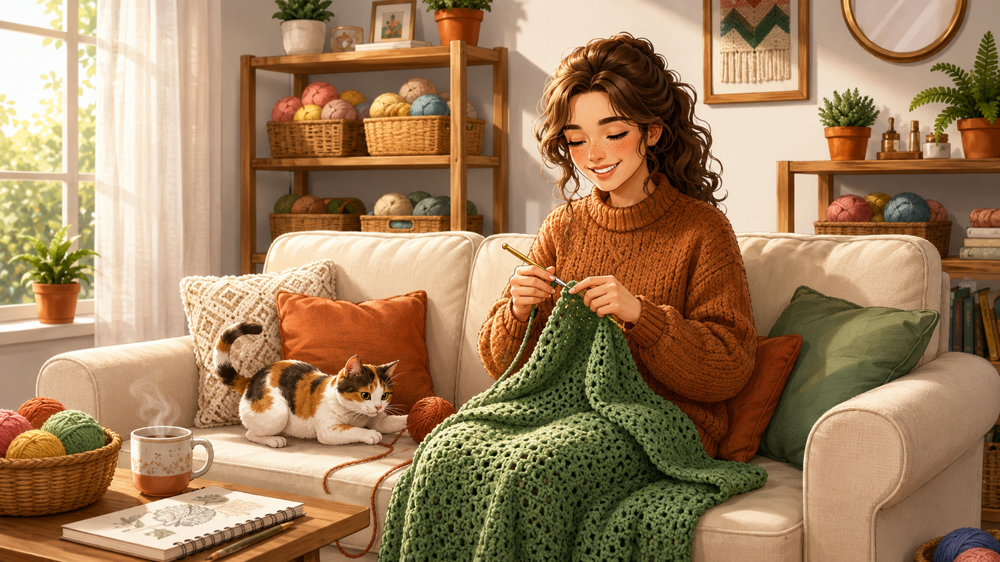

🧸
Amigurumi
CREATIVE MAKER COMMUNITY
Descubre y comparte patrones gratuitos de crochet
Únete a miles de tejedores y encuentra inspiración para tu próximo proyecto en nuestro acogedor rincón digital.

Categorías populares
Encuentra exactamente lo que quieres tejer
👕
Ropa
🏠
Hogar
🛠️
Accesorios
👶
Bebés